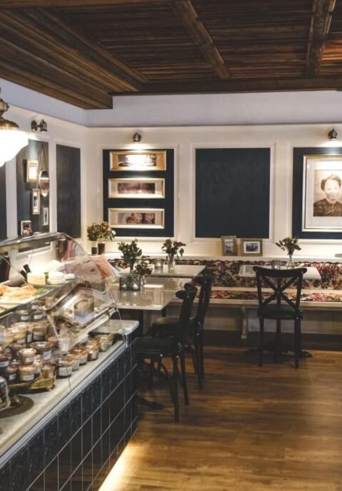

The Five Star Hotel
This 45-suite boutique hotel elevates the standard of luxury for travellers in the region. Beautiful in its symmetry and flooded with natural light, this plantation-style property is airy and spacious. Each of our 80m² suites have a private balcony overlooking the iconic silhouette of the Ngong Hills, a magical view which can also be enjoyed over sundowners at the Bar.

- 
Our service is personal and sincere, offering a luxury experience from the moment you touchdown in Kenya. Your dedicated butler will know that you prefer Earl Grey to Assam with your scones, and will remember which trousers you like pressed flat and which ones need a central crease. So while you are indulging in the spa, relaxing beside the pool or meandering through the gardens, back in your suite, your butler will have dimmed the lights, adjusted your personalized pillows, set out your nightcap and arranged the morning’s outing down to the finest detail.